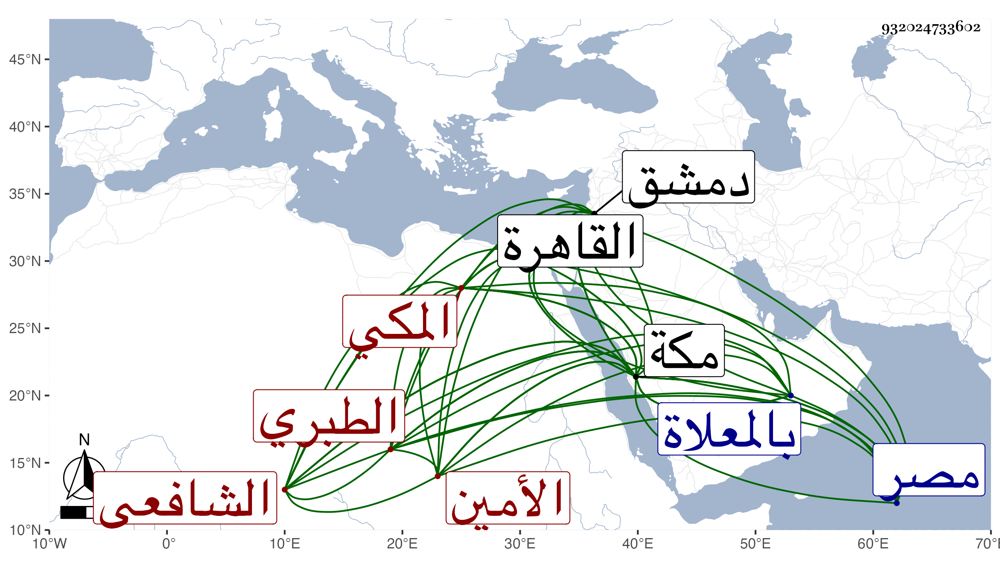

0902Sakhawi.DawLamic.ITO20230111-ara1.EIS1600.932024733602
Biography ID: 932024733602
962
محمد بن أحمد بن الرضي إبراهيم بن محمد بن إبراهيم بن أبي بكر بن محمد بن إبراهيم الأمين وقال المقريزي : الزين أبو اليمن بن الشهاب أبي المكارم بن أبي أحمد الطبري المكي الشافعي أخو المحب أبي البركات محمد من ذاك القرن وأمه حسنة ابنة محمد بن كامل بن يعسوب الحسني . ولد سنة ثلاثين وسبعمائة بمكة وأجاز له ابن المصري وإبراهيم بن الخيمي وغيرهما من مصر وأبو بكر بن الرضي وزينب ابنة الكمال والمزي والبرزالي وآخرون من دمشق والشرف الأميوطي بل سمع من والده وعيسى بن عبد الله الحجي والزين الطبري والأقشهري وابن مكرم وعثمان بن الصفي وعثمان بن سجاع الدمياطي والفخر التوزري والسراج الدمنهوري والجمال عبد الوهاب الواسطي والعز بن جماعة والتاج ابن بنت أبي سعد والنور الهمذاني والشهاب الهكاري وآخرين وتفرد بالسماع من عيسى وبالرواية عن الزين والأقشهري وعثمان الدمياطي والواسطي وكذا بالإجازة الشرف الأميوطي وغيرهم ، وحدث سمع منه شيخنا وذكره في معجمه ، والمقريزي في عقوده وكرره وأنه سليم الباطن ، والتقي الفاسي وترجمه في تاريخ مكة وغيره ، والصلاح الأقفهسي وخرج من حديثه جزءا ، والتقي بن فهد وأورده في معجمه وآخرون . ودخل القاهرة مرارا وولي إمامة المقام بمكة بعد أخيه المحب شركة لابن أخيه الرضي بن المحب وناب عنه أخيه المحب في الإمامة وكذا في التراويح كل سنة غالبا ، وكان منور الوجه مشهورا بالخير بحيث يقصد للزيارة والتبرك وله وقع في القلوب مع الانقباض عن الناس ، وقد صحب جماعة من الفقراء ورؤي النبي صلى الله عليه وسلم في المنام وهو يأمر بالسلام عليه قال : لأنه من أهل الجنة أو قال : من سلم عليه دخل الجنة . مات في صفر سنة تسع بمكة ودفن بالمعلاة رحمه الله وإيانا .
